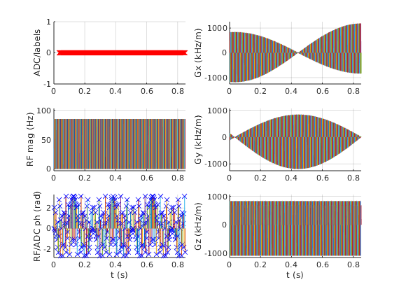
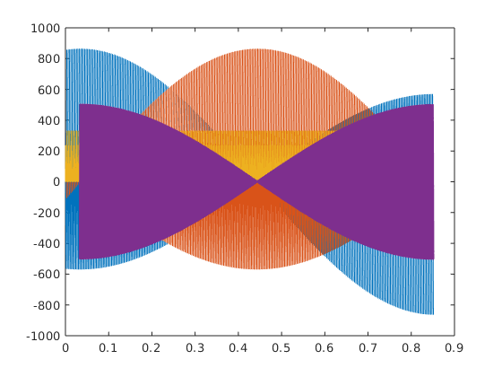
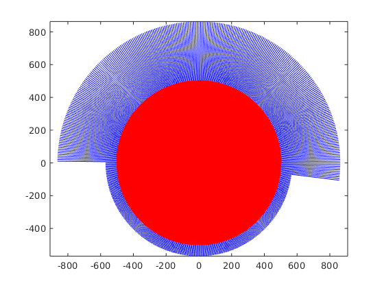

Contents
sys = mr.opts('MaxGrad', 28, 'GradUnit', 'mT/m', ...
'MaxSlew', 120, 'SlewUnit', 'T/m/s', 'rfRingdownTime', 10e-6, ...
'rfDeadTime', 100e-6, 'adcDeadTime', 10e-6);
seq=mr.Sequence(sys);
fov=240e-3; Nx=240;
alpha=5;
sliceThickness=6e-3;
Nr=256;
Ndummy=10;
delta= pi / Nr;
ro_dur=1200e-6;
ro_os=2;
ro_spoil=0.5;
sl_spoil=2;
rfSpoilingInc=117;
[rf, gz, gzReph] = mr.makeSincPulse(alpha*pi/180,'Duration',400e-6,...
'SliceThickness',sliceThickness,'apodization',0.5,'timeBwProduct',2,'system',sys);
gzReph.delay=mr.calcDuration(gz);
gzComb=mr.addGradients({gz, gzReph}, 'system', sys);
deltak=1/fov;
gx = mr.makeTrapezoid('x','Amplitude',Nx*deltak/ro_dur,'FlatTime',ceil(ro_dur/sys.gradRasterTime)*sys.gradRasterTime,'system',sys);
adc = mr.makeAdc(Nx*ro_os,'Duration',ro_dur,'Delay',gx.riseTime,'system',sys);
gxPre = mr.makeTrapezoid('x','Area',-gx.amplitude*(ro_dur/Nx/ro_os*(Nx*ro_os/2-0.5)+0.5*gx.riseTime),'system',sys);
[gxPre,~]=mr.align('right', gxPre, 'right', gzComb);
addDelay=mr.calcDuration(rf)-gxPre.delay;
if addDelay>0
gxPre.delay = gxPre.delay+ceil(addDelay/sys.gradRasterTime)*sys.gradRasterTime;
end
if sl_spoil>0
sp_area_needed=sl_spoil/sliceThickness-gz.area/2;
gzSpoil=mr.makeTrapezoid('z','Area',sp_area_needed,'system',sys,'Delay',gx.riseTime+gx.flatTime);
else
gzSpoil=[];
end
if ro_spoil>0
ro_add_time=ceil(((gx.area/Nx*(Nx/2+1)*ro_spoil)/gx.amplitude)/sys.gradRasterTime)*sys.gradRasterTime;
gx.flatTime=gx.flatTime+ro_add_time;
end
rf_phase=0;
rf_inc=0;
TR=0;
for i=(1-Ndummy):Nr
rf.phaseOffset=rf_phase/180*pi;
adc.phaseOffset=rf_phase/180*pi;
rf_inc=mod(rf_inc+rfSpoilingInc, 360.0);
rf_phase=mod(rf_phase+rf_inc, 360.0);
phi=delta*(i-1);
seq.addBlock(mr.rotate('z',phi,rf,gzComb,gxPre));
if (i>0)
seq.addBlock(mr.rotate('z',phi,gx,adc,gzSpoil));
else
seq.addBlock(mr.rotate('z',phi,gx,gzSpoil));
end
if TR<=0
TR=seq.duration;
end
end
check whether the timing of the sequence is correct
[ok, error_report]=seq.checkTiming;
if (ok)
fprintf('Timing check passed successfully\n');
else
fprintf('Timing check failed! Error listing follows:\n');
fprintf([error_report{:}]);
fprintf('\n');
end
Timing check passed successfully
plot, etc
seq.plot();

trajectory calculation
[ktraj_adc, t_adc, ktraj, t_ktraj, t_excitation, t_refocusing] = seq.calculateKspacePP();
figure; plot(t_ktraj, ktraj');
hold; plot(t_adc,ktraj_adc(1,:),'.');
figure; plot(ktraj(1,:),ktraj(2,:),'b');
axis('equal');
hold;plot(ktraj_adc(1,:),ktraj_adc(2,:),'r.');
seq.setDefinition('FOV', [fov fov sliceThickness]);
seq.setDefinition('Name', 'gre_rad');
seq.write('gre_rad.seq')
return;
Current plot held
Current plot held
 
very optional slow step, but useful for testing during development e.g. for the real TE, TR or for staying within slew rate limits
rep = seq.testReport;
fprintf([rep{:}]);